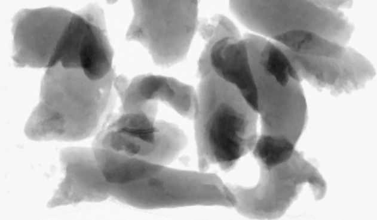
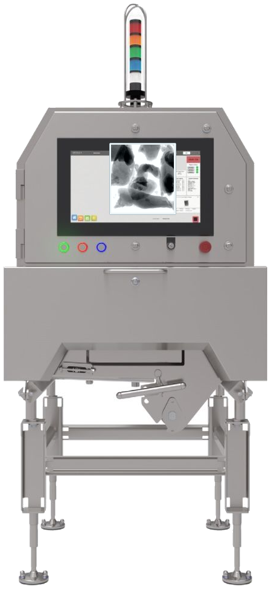
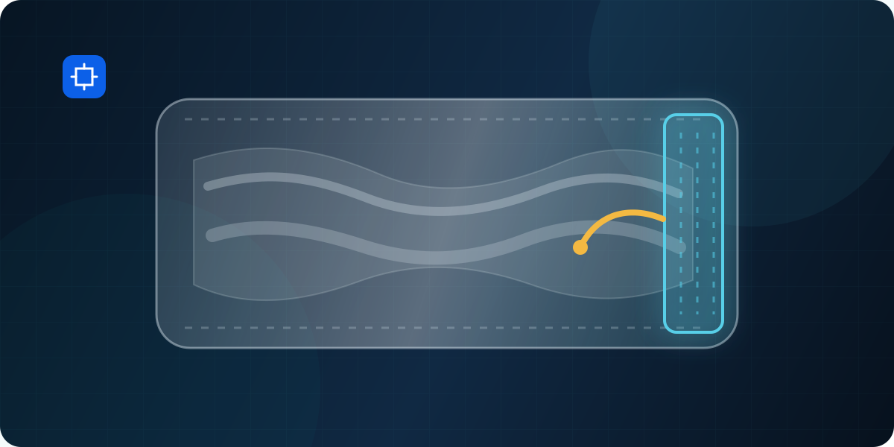

02
Image evidence
Reviewable

Source imageCONNECTED FOOD INSPECTION
GreyscaleAI connects inspection results, images, history, and context so teams can make confident decisions faster.


Source imageFROM DECISION TO UNDERSTANDING
GreyscaleAI gives teams the evidence and context to work through follow-up questions faster and make more confident decisions.
Review the inspection image, result, event history, and product context behind the decision.
Compare related activity across products, lines, shifts, plants, and time to see what appears isolated and what may be recurring.
Give food safety, quality, operations, maintenance, and support teams a common record for deciding what comes next.
THE GREYSCALEAI PLATFORM
HRX systems capture inspection images. Product-specific AI analyzes them. Insights brings evidence, events, trends, system health, alerts, and support into a reviewable workflow.
Explore the Platform
CHOOSE YOUR STARTING POINT
Start with the production problem, software workflow, physical inspection system, or real application proof.
PROOF IN PRODUCTION
Explore how application-specific X-ray image analysis distinguishes difficult product and package conditions in production.
 FOREIGN MATERIAL / PROTEIN
FOREIGN MATERIAL / PROTEIN

PACKAGE QUALITY PACKAGE QUALITY
PACKAGE QUALITY
INDUSTRIES
Explore category-specific applications, fit considerations, Insights workflows, and relevant proof.
TALK THROUGH FIT
We will help define the inspection system, application, Insights workflow, and validation plan to evaluate for your line.